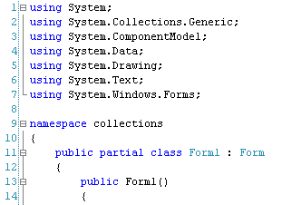
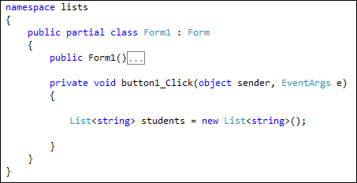
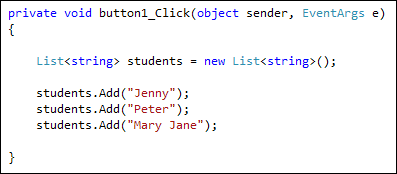
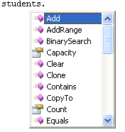
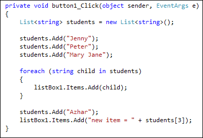
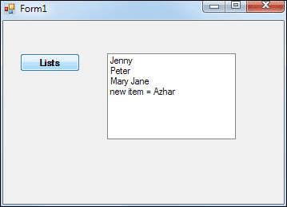
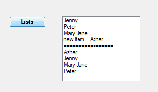

C# Collections - Lists
<< Continues from the previous lesson
Arrays are very useful for holding lots of values under the same name. But there is also something called a Collection that does a similar job. In fact, there's an inbuilt group of Classes in C# specifically for Collections. They can be quite powerful.
With an array, you store data of the same type. So one array can only hold, say, numbers, but not letter. And an array set up as string can't hold numbers. So you can't do this, for example:
arrayPos[0] = 1;
arrayPos[1] = "two";
The first position holds a number and the second position holds text. C# won't let you do this in an array. But you can do it in a collection known as a Hashtable.
Collections can also make it easier to do things like sorting the data in your lists, deleting items, and adding more items. We'll start with the collection class called Lists.
Lists
You use a List when your collection may need items adding to it, deleting from it, or needs sorting. For example, suppose you are teacher with a class of ten children. You could keep a list of the children's names, add new students, delete ones who leave, and even sort them alphabetically! If you used a normal array, it would be difficult to do these things.
So start a new C# project. Add a button and a listbox to your new form. Double
click the button to get at the coding window. Now have a look near the top and
you'll see a list of using statements (lines 1 to 7 in the image below):

The using statement that is needed for lists is the one that says System.Collections.Generics. If you can't see it as one of your using statements, add it yourself.
To set up a List, double click the button on your form to create a code stub. Now add the following line:
List<string> students = new List<string>();
You start with the word, List. Then comes a pair of pointy brackets. In between the pointy brackets you need a variable or object type. We've used string. What this tells C# to do is to set up a List that will hold string values. The list itself is called students. After an equal sign, we have the new keyword. Next comes the List<string> part again. This time, however, it's followed by a pair of round brackets, telling C# to create a new list of string values.
Your code window will look something like this:

After setting up the List, you need to fill it with data. Add the following three lines to your code:
students.Add("Jenny");
students.Add("Peter");
students.Add("Mary Jane");
Your coding window will then look like this:

After typing the name of your List (students, for us), you may have seen the C# IntelliSense list appear:

students.Add( "Jenny" );
For every item in your collection, you need a new line that Adds items.
To access the items in your List, you can use a foreach loop. Add this to your button code:
foreach (string child in students)
{
listBox1.Items.Add( child );
}
So we're looping round all the items in the List, and then adding them to the listbox.
You can also use an ordinary for loop:
for (int i = 0; i < students.Count; i++)
{
listBox1.Items.Add( students[i] );
}
Notice that the end condition is students.Count. Count is a property of Lists that tells you how many items is in it. Inside the for loop, we're using square brackets with the index number inside. This is just like the normal arrays you used earlier.
But if you want to loop round a collection, the above code is not the right choice. A better choice is a foreach loop.
A foreach loop ends when no more items in your collection or array are left to examine. Unlike a normal for loop, you don't have to tell C# when this is - it already knows what's in your collection, and is clever enough to bail out of the foreach loop by itself.
You can add a new item to your List at any time. Here's an example to try:

So we're adding a fourth student to the List, Azhar, and then displaying the item in the listbox.
Add the new code to your button. Run your programme and click your button. Your form will look something like this:

Sorting a List
Sorting a List alphabetically is quite straightforward. You just use the Sort Method. Like this:
students.Sort();
And here's some code to try out. The new lines should be added at the end of your current code:
students.Sort();
listBox1.Items.Add("=================");
foreach (string child in students)
{
listBox1.Items.Add(child);
}
Run your programme and try it out. Here's what your listbox will look like after the button is clicked:

As you can see, the items have been sorted alphabetically, in ascending order. You can have a descending sort, if you prefer. One way to do this is with the Reverse method:
students.Reverse( );
No extra coding is needed!
Removing items from a List
To remove an item from your list, you can either use the Remove or the RemoveRange methods. The Remove method deletes single items from the List. You use it like this:
students.Remove( "Peter" );
In between the round brackets of Remove, you simply type the item you want to remove.
If you want to remove more than one item, use RemoveRange. Like this:
students.RemoveRange( 0, 2 );
The first number between the round brackets of RemoveRange is where in your list you want to start. The second number is how many items you want to remove. Here's some code to try at the end of your button:
students.RemoveRange(0, 2);
listBox1.Items.Add("=================");
foreach (string child in students)
{
listBox1.Items.Add(child);
}
But that's enough of Lists. There's lots more that you can do with them, and they are worth researching further.
The final Collection we'll look at is called a Hashtable.